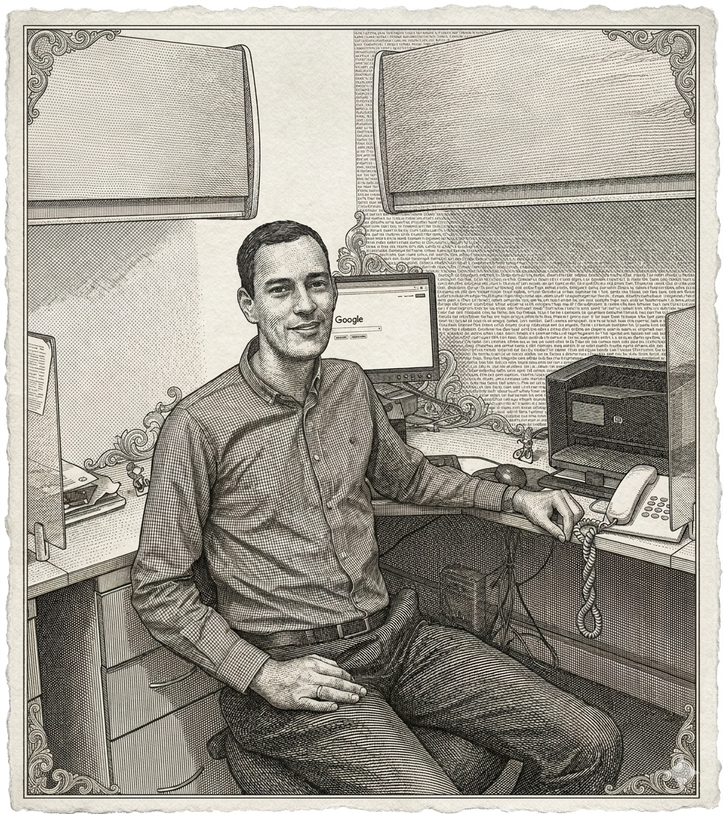
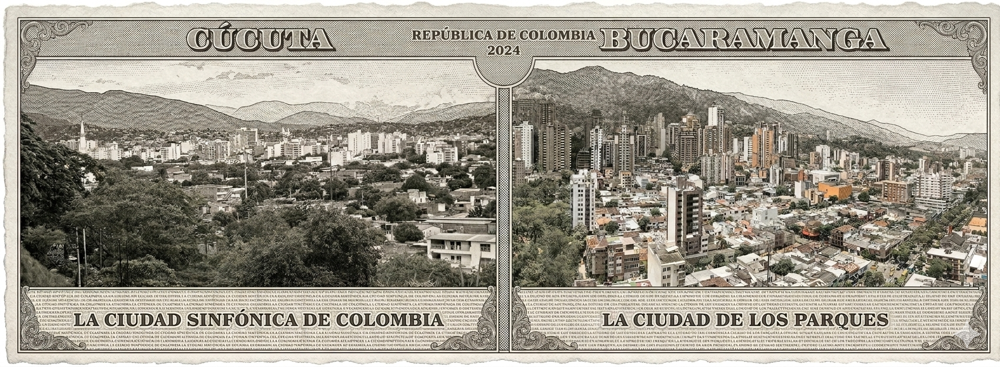
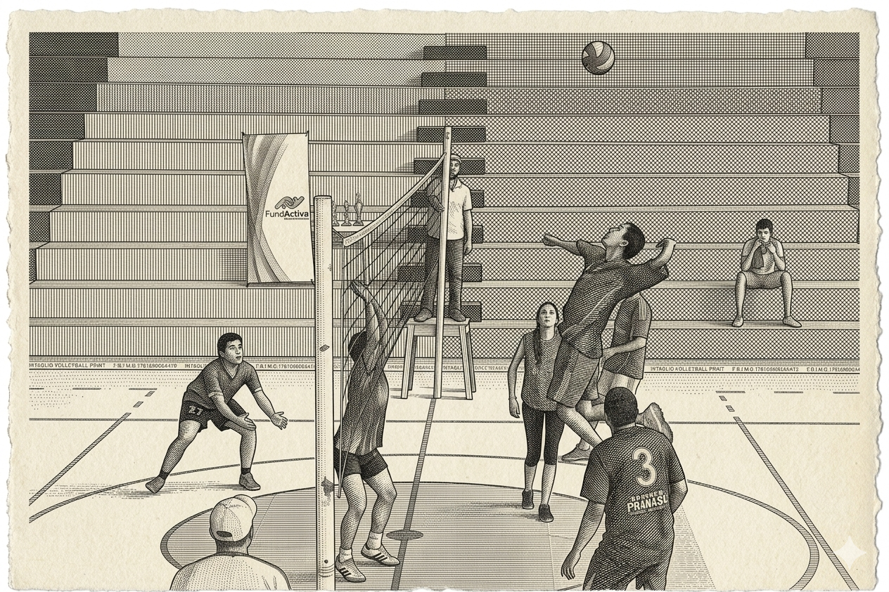

Bienvenclasso a mi página acerca de mi
Esta es mi primera página HTML creada como parte del Bootcamp Digitech Caritas para Proyecto 1.
Nombres y apellidos

William Hernandez
Lugar y fecha de nacimiento

Nací en abril de 1983 en la ciudad de Cúcuta, Norte de Santander, en el nororiente colombiano. Ubicada en la cordillera oriental de los Andes junto a la frontera con Venezuela, es un epicentro comercial, histórico y cultural. La ciudad goza de un clima cálido y seco durante todo el año, con temperaturas promedio que oscilan entre los 27 °C y 32 °C.
A los tres años de edad me mudé con mi familia a la ciudad de Bucaramanga, capital del departamento de Santander, donde viví la mayor parte de mi vida. Conocida como la Ciudad Bonita de Colombia, Bucaramanga es famosa por sus amplias zonas verdes, sus parques bien cuidados y la calidez de su gente. Está ubicada sobre una meseta en la cordillera oriental de los Andes, a aproximadamente 959 metros sobre el nivel del mar, lo que le otorga ese clima privilegiado y primaveral que la hace tan especial: temperaturas que rondan entre los 18 °C y 28 °C durante todo el año, sin los extremos de frío ni de calor, haciendo de cada día algo agradable.
Es cierto que Bucaramanga se asienta en una zona de alta actividad sísmica, ya que se encuentra cerca de importantes fallas geológicas, pero eso no le resta ni un ápice de su encanto. La ciudad destaca también por su gastronomía, especialmente el famoso cabro a la llanera y las hormigas culonas, un manjar típico santandereano reconocido a nivel mundial. Su gente, conocida como los bumangueses, es reconocida por su empuje, alegría y hospitalidad.
Allí estudié mi secundaria y carrera profesional, y Bucaramanga guarda un lugar muy especial en mi corazón por una razón aún más importante: es la tierra que me regaló lo más valioso de mi vida, mi esposa y mis hijas. De esas calles bumanguesas, de esa ciudad bonita y acogedora, viene la familia que hoy es mi motor y mi mayor orgullo. Por eso, aunque ahora vivo lejos, una parte de mí siempre estará en Bucaramanga.
Hobbies y pasatiempos

Para mí, jugar voleibol es mucho más que un pasatiempo. Llegué a este deporte a los 12 años casi por accidente: en la secundaria ya no había cupos disponibles en fútbol ni en baloncesto para el curso obligatorio de deportes, así que el voleibol fue mi única opción por descarte. Entré sin ningún entusiasmo, sin imaginar lo que ese momento cambiaría en mí.
Sin embargo, desde que recibí el entrenamiento adecuado y pisé la cancha por primera vez con criterio, algo hizo clic. Descubrí la adrenalina de cada jugada, la precisión milimétrica que exige un buen voleo y la satisfacción explosiva de rematar con fuerza en la red. El voleibol te enseña además que ningún éxito es individual: dependes por completo de la sincronía, la comunicación y la confianza con tus compañeros para salvar cada balón y construir cada punto.
Hoy, el voleibol es parte esencial de quién soy. Me mantiene activo físicamente, despeja mi mente cuando más lo necesito y, sobre todo, me ha regalado grandes amistades forjadas dentro y fuera de la cancha. Lo que empezó como la última opción disponible se convirtió en una de las mejores cosas que me ha pasado.
Estudios
Desde joven sentí una profunda pasión por la tecnología, lo que me llevó a estudiar Ingeniería de Sistemas en la Universidad Cooperativa de Colombia, sede Bucaramanga, donde me gradué en el año 2007. Complementé mi formación académica obteniendo la certificación Cisco Certified Network Associate (CCNA) en la Universidad Autónoma de Bucaramanga, consolidando así mis conocimientos en redes y telecomunicaciones.
Años más tarde, con el firme propósito de actualizar mis habilidades en el mundo del desarrollo de software, participé en el BootCamp Misión TIC 2022, un programa de formación intensiva impulsado por el Gobierno de Colombia, donde recorrí las siguientes etapas:
- Fundamentos: Introducción a la algoritmia y lógica de programación, utilizando Python como lenguaje base.
- Programación Básica: Estructuras de datos y Programación Orientada a Objetos con Java.
- Retos: Resolución individual de desafíos oficiales calificables del programa, implementados con Java Spring Boot.
- Proyectos: Desarrollo de proyectos integradores finales del bootcamp utilizando React.
Mi compromiso con el aprendizaje continuo no se ha detenido. En 2026 participé en el Ethical Hacking Cisco Cyber Games Americas, una competencia hemisférica de ciberseguridad organizada por Cisco, reafirmando mi interés en la seguridad informática y los nuevos retos del mundo digital.
Recorrido e Historia
Hace dos años se me presentó una oportunidad que cambiaría el rumbo de mi vida: residir en Europa. Durante una primera etapa, viví con mi familia en Polonia, un país que nos sorprendió gratamente con su rica historia, su arquitectura medieval, su gente acogedora y sus paisajes que cambian radicalmente con cada estación del año. Una experiencia que nos marcó profundamente como familia.
Sin embargo, el destino tenía otros planes para nosotros. España nos llamó con su idioma familiar, su cultura vibrante y su estilo de vida mediterráneo, y fue así como llegamos a Alicante, una ciudad costera de la Comunidad Valenciana que nos conquistó desde el primer momento. Con su sol generoso casi todo el año, sus playas de aguas cristalinas, su casco histórico coronado por el imponente Castillo de Santa Bárbara y la calidez de su gente, Alicante se ha convertido en nuestro nuevo hogar. Aquí residimos desde hace un año, construyendo una nueva etapa llena de aprendizajes, oportunidades y momentos inolvidables.